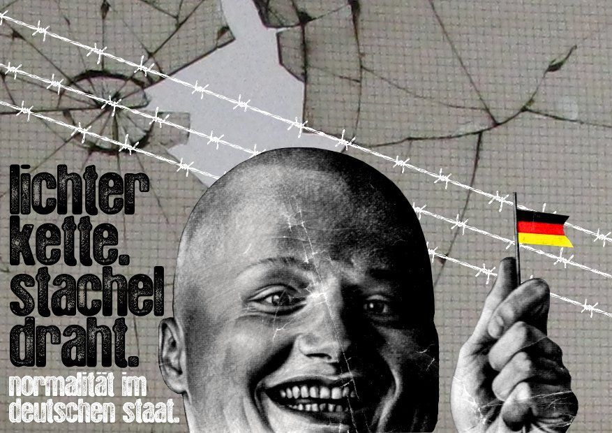

Am Wochenende des 4. und 5. Juni wird die NPD nun zum zweiten Mal ihren Bundesparteitag in der Bamberger Konzert- und Kongresshalle abhalten. Dagegen demonstrieren verschiedene bürgerliche Gruppen und Organisationen, verkennen aber dabei dass die NPD selbst Teil ihrer spätkapitalistischen Gesellschaft ist. Diese Veranstaltung propagiert die Distanz zu reaktionären Denkmustern wie Rassismus, Sexismus, Homophobie, Antisemitismus, reproduziert diese jedoch genauso, weil sie demselben gesellschaftlichen und kapitalistischen Denkmuster verhaftet bleibt.
An diesem Wochenende inszeniert sich die Stadt, durch ein breites Bündnis, demokratisch und weltoffen. Von links bis rechts, die Volksfront eint sich gegen den „braunen Spuk“ durch eine temporäre Politik des Burgfriedens über alle Lager hinweg. Dabei rücken Demokrat_innen zusammen, für die die rassistische Abschiebungspraxis der BRD ansonsten Konsens zu sein scheint, und die die Sorge um den Standort (sei es Deutschland oder Bamberg) umtreibt. Wir widersprechen ihrem Versuch, sich mithilfe der gemeinsam abgelehnten NPD ein „buntes“ Image zu verleihen und so über ihre eigene rassistische und menschenverachtende Praxis hinweg zu kitschen.
Ein Zeichen zu setzen gegen „Rechts“, das ist der Konsens der Gemeinschaft.
In der Innenstadt feiert sich das moderne Deutschland mit einem Karneval der Kulturen: Logischerweise wird auf „Fremdenfeindlichkeit“ mit „Fremden“ geantwortet. Die Ansammlung von Menschen aus „exotischen“ Ländern und Kulturen ist ein vermeintlich antirassistisches Statement. Die geläufigen Stigmata werden lediglich positiv aufgeladen. „Türk_innen“ machen Döner, „Araber_innen“ zeigen ihre Bäuche, „Schwarze“ trommeln, die Einheimischen trinken Bier. Ergänzend planen Kirchen, Gewerkschaften und andere Gruppen weitere Aktionen mit den klassischen Arbeitsmateralien des bürgerlichen Antirassimus: Fingerfarbe und Luftballons. Ein rauschendes Fest der Anständigen wird so zelebriert, gern auch mit Menschenketten – mal mit Licht, mal ohne – um weiterhin guten Gewissens die Reproduktion der Heuchelei ertragen zu können. Die täglichen Abschiebungen und Sortierungen in „Inländer_innen“ und „Ausländer_innen“ finden jedoch ungebrochen statt. Bunte Aktionen sorgen nur für oberflächlichen Glitter, hinter dem business-as-usual weitergeht.
„Business as Usual“ oder Die Kapitalistische Vergesellschaftung
Kapitalistische Vergesellschaftung ist nicht mehr durch direkt gewaltvermittelte, sondern wesentlich durch sachlich-tauschvermittelte Aneignungsprozesse gekennzeichnet. Waren vor der bürgerlichen Gesellschaft die Herrschenden unmittelbar repressiv, so ist die Herrschaft anonym gewordene gesellschaftliche Unterdrückung: Kein Hirt und eine Herde! Jeder will das Gleiche, jede ist gleich: Wer anders fühlt, geht freiwillig ins Irrenhaus. Herrschaft ist nicht mehr im König personifiziert, ihre Quelle nicht augenscheinlich. Sie wird durch das Tun und Lassen aller aufrecht erhalten und stets reproduziert – sie ist verkleidet in der kapitalistischen Produktion. Im Glauben, Waren würden um ihres Gebrauchs willen hergestellt und nicht etwa ausschließlich zum Tausch auf dem Markt, liegt die Ideologie, die die wahre Natur des Wirtschaftssystems überdeckt. So wird die Gesellschaft bestimmt durch Produktion von Tauschwerten und der Mensch zum Anhängsel dieser Maschinerie, seine Bedürfnisse sind Funktionen des Produktionsapparates:
Die Gebrauchswertseite der Waren hat ihre letzte Selbstverständlichkeit eingebüßt. Die Bedürfnisse werden lediglich indirekt über den Tauschwert befriedigt. Sie werden vom Profitinteresse überhaupt erst hervorgebracht, vielfach auf Kosten anderer Bedürfnisse der Konsument_innen. Bedürfnisse, wie das nach Bildung, bleiben unerfüllt, während erfundene, wie das nach Kosmetik, überreich ihre Befriedigung finden. Der Gedanke der Vollausnutzung von Kapazitäten für den ästhetischen Massenkonsum gehört dem ökonomischen System an, das die Ausnutzung der Kapazitäten verweigert, wo es um die Abschaffung des Hungers geht.
Der Staat: Keine Lösung
Gesellschaftliche Veränderung ist nicht von einem Politikwechsel zu erwarten. Und der Staat wäre ohnehin für diese ohnehin kein nützliches Instrument. Denn es ist eben dieser Staat, der die Wirtschaftsweise fördert, in der immer mehr ohne Einkommen dastehen, während andere noch länger arbeiten müssen. Er ist keine Hilfe für die Menschen, sondern die Grundlage der ganzen Veranstaltung und damit nichts, worauf man sich positiv beziehen könnte. Seine bürgerliche Freiheit ist Unfreiheit zugleich: Die Garantie des Eigentums befähigt den Menschen überhaupt erst zur Marktteilnahme, bindet die Ausbeutung der Lohnarbeit an einen Vertrag und befriedet den Warentausch der vereinzelten Marktteilnehmer_innen, der freien Individuen. Zugleich garantiert der Schutz des Eigentums dessen ungleiche Verteilung – darin besteht die Basis für Abhängigkeit und Unfreiheit. Der Weg der Zivilisation, wie sie die bürgerliche Gesellschaft entwirft, und ihres Staates ist der von Gehorsam und Arbeit, über dem Erfüllung von Bedürfnissen und Freiheit immerwährend bloß als Schein, als entmachtete Schönheit leuchtet. Die kontinuierliche Abreibung, die Brechung allen individuellen Widerstandes, ist die Bedingung des Lebens in dieser Gesellschaft. Wenngleich die bürgerliche Gesellschaft Freiräume eröffnet und Emanzipation ermöglicht, setzt sie doch zugleich die Individuen neuen Zwängen aus und bedroht diese mit Gewalt.
Das alles muss nicht so sein; die Menschen können ihr Sein ändern, die Möglichkeiten dazu sind längst vorhanden. Doch die Bürger_innen richten ihre Kräfte auf die Aufrechterhaltung der repressiven Ordnung, statt diese zu bekämpfen, obwohl die bestehenden Zustände objektiv ihren Interessen widersprechen.
Wir wollen eine Gesellschaft abschaffen, die durch Gewalt Menschen in Institutionen und Verhältnisse zwingt und ihr Lebensglück von der Form des Lohnes abhängig macht.
Die Gesellschaft und die NPD
Während die NPD über das Projekt eines national gewendeten Sozialismus und die Beschwörung der Volksgemeinschaft einen scheinbaren Ausweg aus dem Kapitalismus und seinen Krisen bietet, der sie für viele der Zukurzgekommenen attraktiv macht, ist sie im Grunde eben doch Teil der bürgerlichen Gesellschaft und letztlich eine Partei unter Parteien. Wie bei den politischen Repräsenationen der Mitte so steht auch bei der NPD das Fortkommen Deutschlands im Staatenwettbewerb an erster Stelle; die Arbeiter_innenschaft soll sich für den Wirtschaftsstandort Deutschland ins Zeug legen.
Eine solche Weltanschauung geht davon aus, dass die wie auch immer gearteten Rassen, Kulturen oder Nationalitäten in einem Konkurrenzverhältnis zueinander stehen, das letztlich in einem Existenzkampf mündet. Die einzige Möglichkeit, sich gegen die daraus ergebende angebliche Bedrohung zu schützen, ist die Besinnung auf die eigene Volksgemeinschaft. In dieser Gemeinschaft werden die tatsächlichen Interessen der verschiedenen Individuen und Gruppen negiert, um sich gegen Volksfeind_innen zu schützen. Das impliziert, dass soziale Bedürfnisse und Klassenkämpfe unterdrückt werden. Klassengegensätze stören genauso gut wie die Abschaffung von Herrschaft und Kapitalismus das völkische Heil, die Gemeinschaft. So konnten die stets heimatfremd imaginierten Jüd_innen für den Nationalsozialismus sowohl das raffende Prinzip, wie auch den Bolschewismus symbolisieren. Das Feindliche wird veräußerlicht; um es zu besiegen wird vom Einzelnen die Aufopferung für das Ganze verlangt. „Du bist nichts, Dein Volk ist alles.“ Wer dagegen nach Autonomie oder tatsächlicher Bedürfnisbefriedigung strebt, schadet notwendigerweise dem phantasmagorischem Ganzen und ist als Feind_in der Volksgemeinschaft, als Volksverräter_in, zu betrachten.
Gut und Böse im Kapitalismus?
Die Arbeitsverhältnisse, die vielfach so unmenschlich und schwer erträglich erscheinen, sind Folge absoluten Zwangs im Kapitalismus, nicht der böse Wille einzelner „Bonzen“. Werden nun die Arbeit und ihre Verhältnisse mit dem Mantel von Produktion, Schaffen und Volksgemeinschaft verhüllt, und damit der Kritik entzogen, wird tiefgreifende Kritik verunmöglicht. Diese ist nur mit Blick auf die Gesamtverhältnisse möglich. Alle am Markt Tätigen – vom Handwerk bis zum Konzern – folgen derselben Logik der Wertschöpfung, allerdings mit unterschiedlichem wirtschaftlichen Erfolg. Eine Kritik, die zwischen raffendem und schaffendem Kapital trennt, verkennt die Totalität des Wirtschaftssystems. Sie unterscheidet in gute und böse Teilnehmer_innen am Geschehen, in jene also, die raffen – die „Manager“, „Heuschrecken und „jüdischen Wucherer“ – und jene, die ihr Tun in den Dienst der Gemeinschaft stellen. Beschränkte Kritik verschleiert die Verhältnisse und präsentiert einen Sündenbock, der später als Gegenstand des Raubes und der Revolution herhalten kann. Mit ihm soll dann auch die Ausbeutung verschwinden, die die Gemeinschaft des Volkes, “das vermeintlich schaffende Prinzip“, zersetzt. So wird die Struktur des Antisemitismus geschaffen: Wert, Geld, Handel, Marktgeschehen sind abstrakte, ortlose und ausbeuterische Formen. Sie leben vom Gewinnen und Verlieren in der Konkurrenz, von Wertunterschieden und geschicktem Verhandeln. Ihnen muss sich das gesamte Unternehmen im Rahmen des Wettbewerbs genauso unterordnen, wie der oder die Einzelne bei der Suche nach einem Arbeitsplatz. Ihre Reduktion von einem notwendigen Handeln aller hin zum typischen Verhalten bestimmter Personengruppen ist bereits ihrer Struktur nach antisemitisch. In der Person von Jüd_innen liegt diese Zuschreibung tradiert vor.
Der Nationalsozialismus personalisierte nicht nur diesen Zwang, sondern machte ihn zur Grundlage einer spezifischen antisemitischen Theorie, die schließlich in eliminatorische Praxis einmündete. Mit dem notwendigen Kampf gegen das „raffende jüdische Kapital“ begründete sie die Ermordung von 6 Millionen Jüd_innen.
Zusammen durch die Krise
Die Ereignisse der jüngsten Wirtschaftskrise zeigen, dass völkische Denkmuster keineswegs der Vergangenheit angehören. Die Reaktion auf die Krise besteht wiederum nicht
darin, die Verhältnisse grundlegend in Frage zu stellen. Es geht darum, den Standort Deutschland zu sichern. Die Gewerkschaften beteiligen sich an Lohnkürzungen und an der Verschlechterung der Arbeitsverhältnisse, um das ausbeuterische System zu stützen. Sie sind somit den Interessen der Arbeiter_innen diametral. Im Abbau von Sozialleistungen sollen die Arbeiter_innen wahlweise eine Rettung des Sozialstaats hinnehmen oder aber eine Entlastung für ihre Lohntüte erkennen. Die Lohnsenkungsprogramme der Unternehmen werden ihnen als Rettung ihrer Erwerbsquelle verkauft, und die darin begründete Verschlechterung ihrer Lebenssituation als überlebensnotwendig. Die Zustimmung der Lohnabhängigen zu ihrer dauerhaften Drangsalierung ist für Nation und Kapital eine Produktivkraft. Wer sich gegen diese absurden Vorstellungen stellt, wird zwar nicht explizit als Volksverräter_in betrachtet, das Muster ist aber identisch. Schließlich schadet dieses Verhalten, das darauf ausgerichtet ist, sich nicht weiterhin von sich selbst zu entfremden, der Produktivität der deutschen Industrie. Damit geht der Statusverlust als Leistungsträger_in der Gesellschaft einher, was zu ihrem Ausschluss führt.
Die völkische Intention beinhaltet aber nicht nur die Ausgrenzung einzelner Gesellschaftsschichten, sondern auch das Abgrenzen der „deutschen Gesellschaft“ als etwas Positives, Vorbildliches und Schützenswertes. Wenn die deutsche Wirtschaft vor raffenden amerikanischen Heuschrecken gerettet werden muss oder deutsche Werte und Lehren aus der Geschichte („Ich habe nicht nur gelernt: Nie wieder Krieg. Ich habe auch gelernt, nie wieder Auschwitz.“) mit Waffengewalt in die Welt getragen werden müssen, wird die Volksgemeinschaft als Interessengemeinschaft im Kampf gegen interne und externe Feinde geeint.
Diewahre Annäherung von Menschen wird somit unmöglich gemacht, sind sie doch gezwungen, sich trotz oberflächlicher Toleranz letztlich immer als Konkurrent_innen zu sehen. Diese Konkurrenz führt nicht zwangsläufig in einen Kampf um Leben und Tod, aber doch um wirtschaftliche und kulturelle Existenz. Hierfür sind die Bürger_innen bereit, gesellschaftlich zu unterdrücken und auch sich selbst unterdrücken zu lassen. Nation und Kapital in jeder Form fördern die Entfremdung der Menschen voneinander und ebenso von sich selbst, und sie sind deshalb zu bekämpfen.
Rechtsextremismus?
Dass in den Parteien der Mitte trotzdem die Nase gerümpft wird, wenn die Buchstabenkombination NPD auftaucht, hat seine Ursache nicht ausschließlich in deren Partei- oder Wahlprogramm. Die Gründe hierfür liegen anderswo: Das Problem ist ihr Verhältnis zur historischen Periode des Nationalsozialismus. Die NPD nämlich will den Bruch nicht einsehen, den der deutsche Nationalismus durch die Niederlage im Zweiten Weltkrieg erfahren hat, und möchte einfach nur stolz alle drei Strophen der Nationalhymne singen, den Opa als Weltkriegsveteran ehren und mit Auschwitz in Ruhe gelassen werden. Die Parteien der Mitte sind da bereits einen Schritt weiter: Ihr Nationalismus integriert den Nationalsozialismus und die Shoa und weiß sie in der „Aufarbeitung der eigenen Geschichte“ als „Lehren“ für die offensive Durchsetzung der nationalen Interessen zu nutzen. Die Auffasssung, dass die internationale Ächtung des NS eben keine Schande für „die Deutschen“ darstellt, sondern als Chance für einen neuen deutschen Nationalismus ergriffen werden kann, der vorbildlich Geschichtsaufarbeitung betrieben hat, will sich die NPD nicht zu eigen machen. Damit verkennt die NPD den „Standortfaktor Auschwitz“, und gerade deswegen muss sie aus dem Kreis der politischen Mitte ausgeschlossen werden. Ein weiterer Grund für die Ablehnung der NPD durch das gesamte bürgerliche Spektrum besteht in den Kontakten, die die Partei zu militanten Neonazi-Strukturen unterhält. Diese sind nicht bereit, sich bei der Durchsetzung ihrer Ziele auf die gesetzlich erlaubten Mittel der Meinungsäußerung und politischen Mitgestaltung zu verlassen und das staatliche Gewaltmonopol anzuerkennen. Sie greifen lieber zu Baseballschlägern und Molotow-Cocktails und fordern auch schon mal zur gewaltsamen Umwälzung des Systems auf. An solchen Punkten hört für gute Demokrat_innen der Spaß aber doch auf: Wer mit Kriminellen, die Straftaten begehen oder zu diesen aufrufen, Umgang pflegt, gehört nicht in die allseits beschworene Mitte der Gesellschaft. Nach dieser Definition fällt es dann auch nicht mehr schwer die radikale Linke mit Nazis gleichzusetzen.
„Somit ist die NPD keine Bedrohung dieser „bunten“ Gesellschaft. Sie ist ein Teil von ihr.“